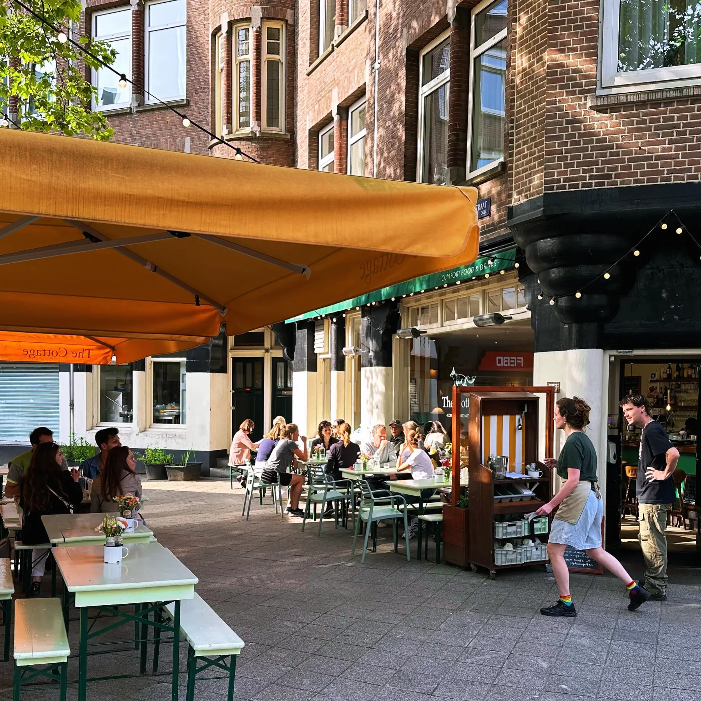
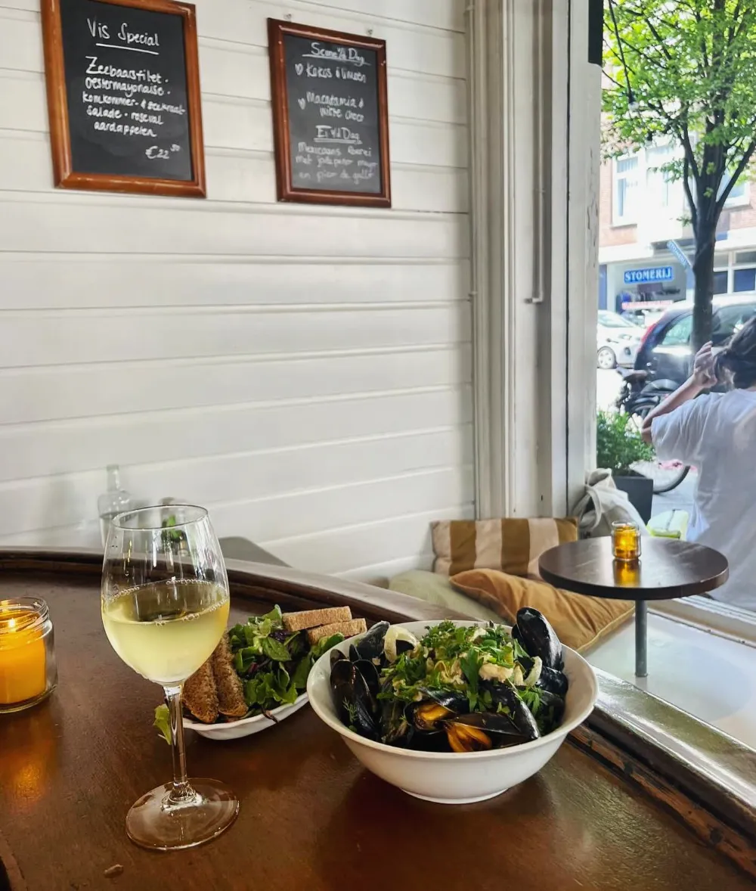
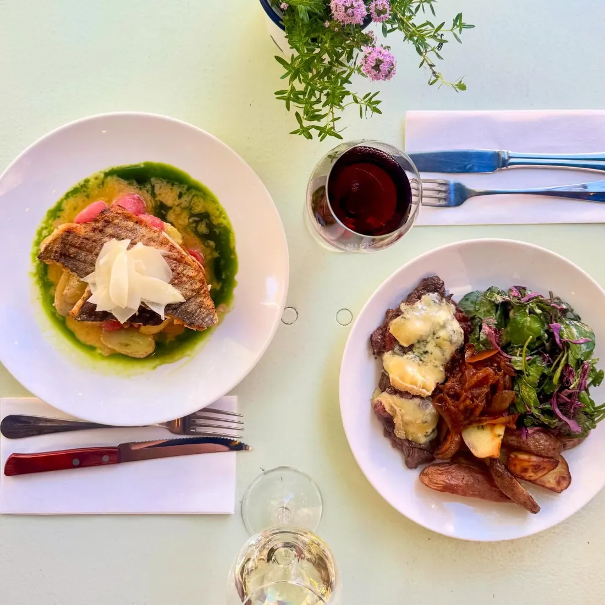
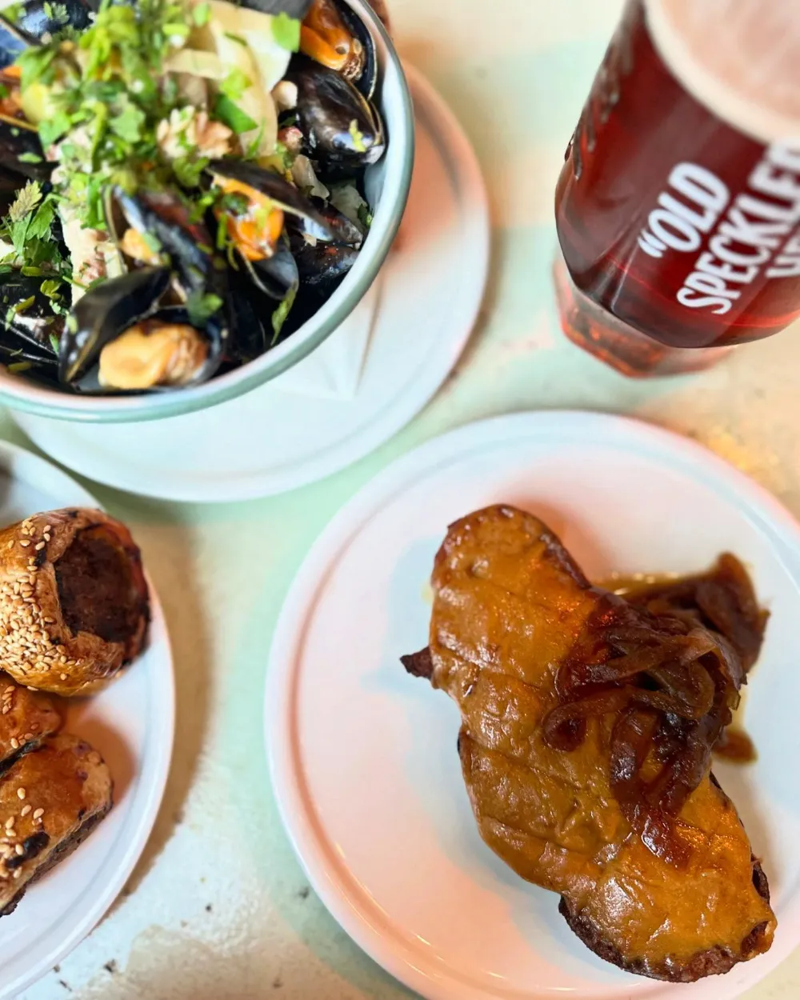
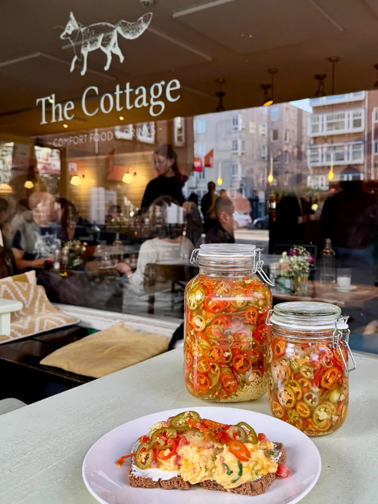
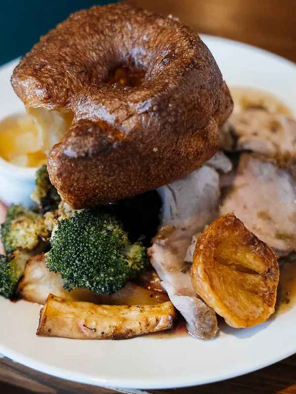
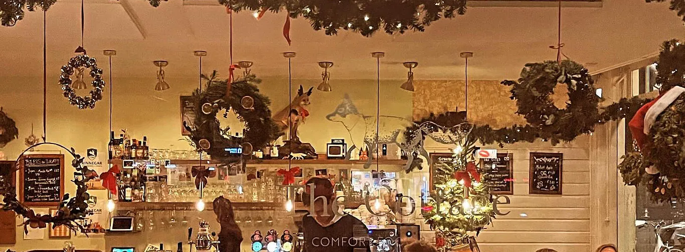
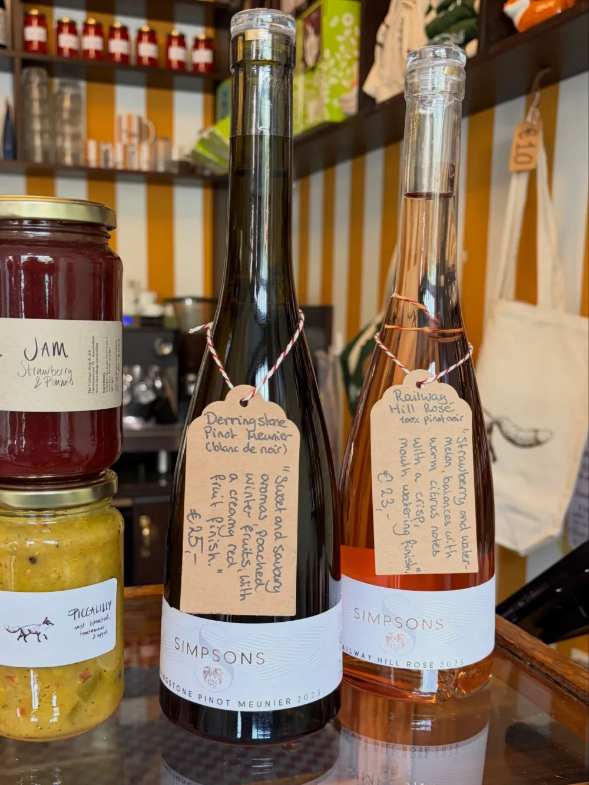
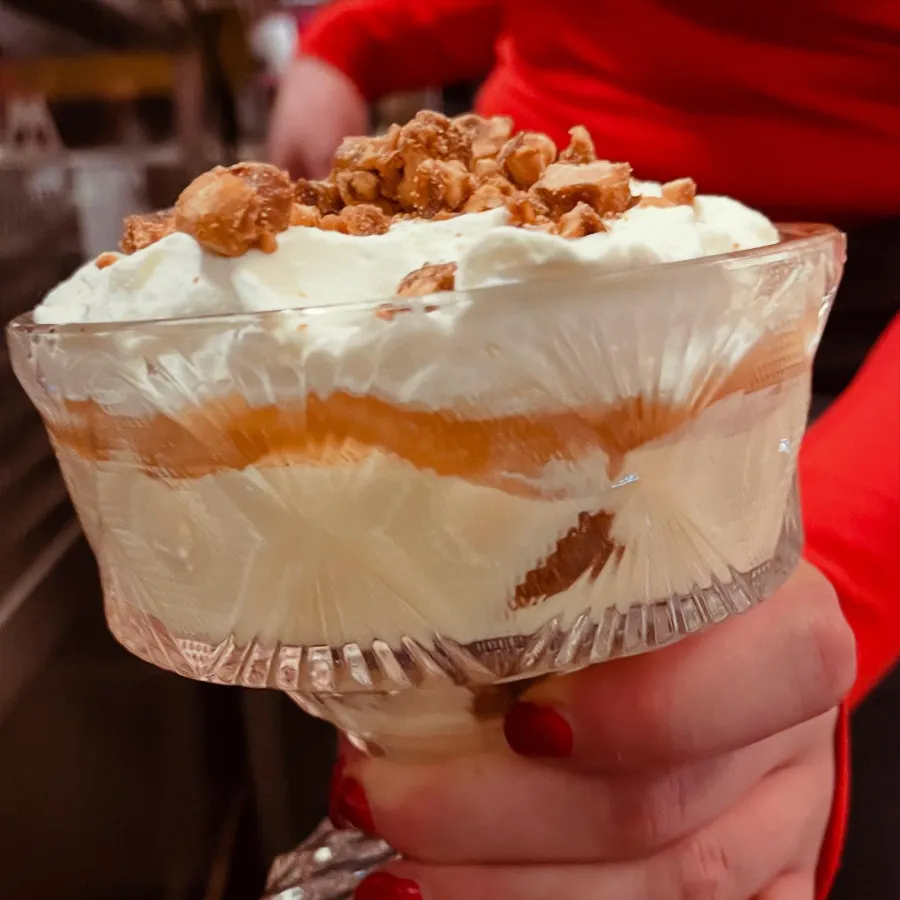

3 course Christmas menu
- Celeriac and porcini soup
- Stuffed turkey or veggie Wellington with all the trimmings
- Our famous trifle
€ 52,50 p.p.

comfort food & drinks
Op een gezellige hoek in Amsterdam-Oost serveren we ontbijt, brunch, elevenses, lunch, afternoon tea, diner en alles daartussen. En elke zondag een echte Sunday Roast.
Dagelijks 8.30 tot 23.00, dinsdag gesloten
Ontbijt, lunch, diner, zoete en hartige trek: we hebben het allemaal geregeld. Met elk drankje dat je erbij wilt.
Vanaf onze mooie oude bar schenken we Stooker-koffie, een flinke rij craft beers en ciders, zorgvuldig gekozen wijnen en andere bijzondere (fris)dranken.
Binnen hebben we maar een paar tafels, dus reserveren kan in het weekend lastig zijn. Probeer het gerust. We houden altijd een paar plekken vrij voor binnenlopers.


Van een scone met clotted cream bij de koffie tot een steak and ale pie bij een pint. Dit is een voorbeeldkaart: gerechten en prijzen kunnen wijzigen.



Elke zondag een echte roast dinner. Rund, lam of varken: het vlees wisselt elke week. En er is altijd een vegetarische roast.
Vanaf 11.30 uur tot het op is. Wil je zeker weten dat je er een krijgt? Reserveer dan een plek, dat kan tot 17.00 uur.

Van 9 december tot het einde van het jaar is het helemaal kerst, in The Cottage én in onze Shop & Deli.
We serveren de hele dag een feestelijke à-la-cartekaart vol kerstklassiekers en andere favorieten. Gewoon een tafel reserveren of binnenlopen kan zoals altijd. Voor de set menu's moet je wel reserveren, en dat kan nu al.
Gesloten op eerste en tweede kerstdag (25 en 26 december).
Extra open op dinsdag 15, 22 en 29 december.
Op 13, 20 en 27 december is onze Sunday Roast ook kerstig: stuffed turkey of veggie Wellington.
Laat onze Shop & Deli dit jaar je kerstcadeaus regelen. Binnenkort meer hierover.
Via de online reservering zoals altijd. Met meer dan 6 personen, of een speciaal verzoek? Mail naar info@thecottage.amsterdam.
Linnaeusstraat 76, een paar deuren verderop
Zelfgemaakte jams en chutneys, vers gebakken scones, sandwiches en pies om thuis op te warmen.
De schappen staan altijd vol met huisgemaakte Cottage-lekkernijen, en we maken elke dag verse scones, sandwiches en pies. In het weekend zijn er altijd Scotch eggs.
Je vindt er ook Engelse wijnen van Westwell en Simpsons uit Kent.
| Maandag | gesloten |
|---|---|
| Dinsdag | 10.00 – 16.00 |
| Woensdag | 10.00 – 16.00 |
| Donderdag | 10.00 – 16.00 |
| Vrijdag | 9.00 – 17.00 |
| Zaterdag | 9.00 – 17.00 |
| Zondag | 10.00 – 16.00 |


Met maar een paar tafels binnen is reserveren, zeker in het weekend, soms een uitdaging. Probeer het gerust.
We houden altijd een paar plekken vrij voor binnenlopers. Kom je met meer dan 6 personen, of heb je een speciaal verzoek? Stuur ons dan een mail.
020 223 0835
info@thecottage.amsterdam
| Maandag | 8.30 – 23.00 |
|---|---|
| Dinsdag | gesloten |
| Woensdag | 8.30 – 23.00 |
| Donderdag | 8.30 – 23.00 |
| Vrijdag | 8.30 – 23.00 |
| Zaterdag | 8.30 – 23.00 |
| Zondag | 8.30 – 23.00 |
Shop & Deli: Linnaeusstraat 76, eigen openingstijden (zie hierboven).